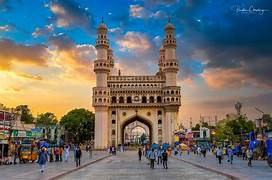
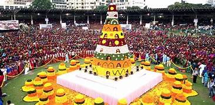

Hyderabad is a vibrant city located in southern India, known for its rich history and unique blend of tradition and modern life. Founded in the late 16th century by Muhammad Quli Qutb Shah, the city is famous for its iconic landmarks like the Charminar, Golconda Fort, and beautiful historic mosques and palaces. Often called the City of Pearls, Hyderabad has long been a center for trade, culture, and education, reflecting a harmonious mix of Mughal, Persian, and Telugu influences.
Today, Hyderabad stands as one of India’s fastest-growing metropolitan cities and a major hub for information technology and innovation. Areas like HITEC City and Gachibowli showcase its modern side with IT parks, startups, and global companies, while the old city preserves its cultural roots. Hyderabad is also world-famous for its cuisine, especially Hyderabadi Biryani, which attracts food lovers from across the globe. This balance of heritage and progress makes Hyderabad a truly dynamic and fascinating city.